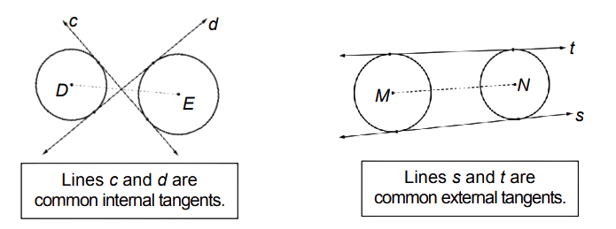
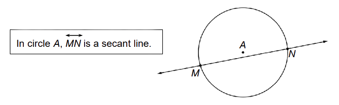

A tangent to a circle is a line coplanar with the circle and intersects it
in one and only one point. The point of intersection of the line and the circle is
called the point of tangency.
Example:
At a given point on a circle, one and only one line can be drawn that is tangent to the circle.
A common tangent is a line that is tangent to two circles in the same plane.
Common internal tangents intersect the segment joining the centers of the two circles
Common external tangents do not intersect the segment joining the centers of the two circles.
Segments and rays that are contained in the tangent or intersect the
circle in one and only one point are also said to be tangent to the circle.

A secant is a line that intersects a circle at exactly two points. A secant contains a chord of a circle.
